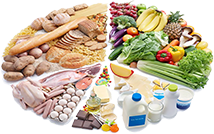
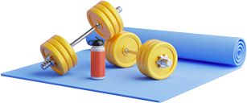

Переворот в снижении веса
Взвешенный подход
ПОЧЕМУ ВЕС
НЕ СНИЖАЕТСЯ?
Избыточное потребление пищи
При низком уровне физической активности сложно удерживать нормальную массу тела даже при ограничен- ном и сбалансированном питании. Физическая актив- ность является не только способом расхода энергии, она важна для обменных процессов и здорового функционирования многих систем организма.
Нарушение пищевого поведения
При низком уровне физической активности сложно удерживать нормальную массу тела даже при ограничен- ном и сбалансированном питании. Физическая актив- ность является не только способом расхода энергии, она важна для обменных процессов и здорового функционирования многих систем организма.
Низкая физическая активность
При низком уровне физической активности сложно удерживать нормальную массу тела даже при ограничен- ном и сбалансированном питании. Физическая актив- ность является не только способом расхода энергии, она важна для обменных процессов и здорового функционирования многих систем организма.
Наследственный фактор
При низком уровне физической активности сложно удерживать нормальную массу тела даже при ограничен- ном и сбалансированном питании. Физическая актив- ность является не только способом расхода энергии, она важна для обменных процессов и здорового функционирования многих систем организма.

Хронический стресс
При низком уровне физической активности сложно удерживать нормальную массу тела даже при ограничен- ном и сбалансированном питании. Физическая актив- ность является не только способом расхода энергии, она важна для обменных процессов и здорового функционирования многих систем организма.
Эндокринное заболевание
При низком уровне физической активности сложно удерживать нормальную массу тела даже при ограничен- ном и сбалансированном питании. Физическая актив- ность является не только способом расхода энергии, она важна для обменных процессов и здорового функционирования многих систем организма.
Для эффективного снижения массы тела рекомендуется
Сбалансированное
питание
питание

Уменьшение калорийности потребляемой пищи на 500-700 ккал/день от физиологической потребности с учетом массы тела, возраста и пола
Увеличение физической
активности
активности

Регулярные аэробные физические упражнения продолжительностью не менее 150 минут в неделю, что эквивалентно 30 мин в большинство из дней
Рекомендации
Согласно современным рекомендациям по лечению избыточного веса и ожирения на фоне диеты и физической нагрузки, сразу назначается медикаментозная терапия
Не рекомендуется назначение пищевых добавок или биологически активных добавок в связи с отсут- ствием данных об их эффективности и безопасности
95%
пациентов не могут достичь успеха в снижении веса без фармакотерапии
5%
Редуксин® Форте
Обеспечивает эффективное
снижение массы тела
вне зависимости от:
пола, возраста и наличия
сопутствующих заболеваний
снижение массы тела
вне зависимости от:
пола, возраста и наличия
сопутствующих заболеваний
Доказанная эффективность
3 месяца
Стойкий и заметный результат уже через 3 месяца терапии.
6 месяцев
90% пациентов за 6 месяцев достигли:
В отличие от других препаратов
для снижения веса — уже с первого дня терапии работает сразу
в 2 направлениях:
для снижения веса — уже с первого дня терапии работает сразу
в 2 направлениях:

Доказанная безопасность
Даже в группах пациентов с высоким риском осложнений, не оказывает негативного влияния на сердечно-сосудистую систему